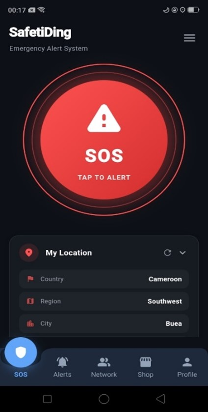
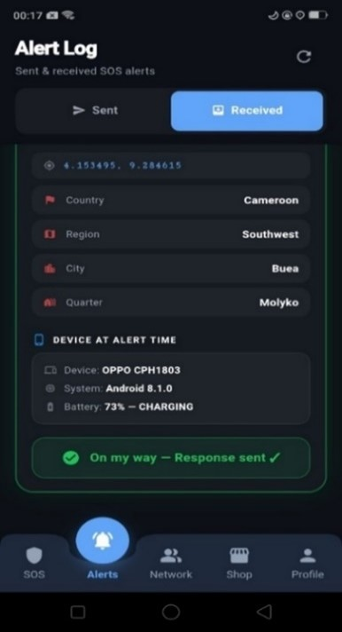

SafetiDing
In an emergency there is rarely a fast way to tell trusted people where you are. SafetiDing sends your live location with one tap.
Role
Systems and Mobile Software Engineer
Team and time
Team of 2, November 2025 to July 2026
Result
About 94% success across 20 trial runs
What it does
- One tap SOS trigger
- Live GPS tracking sent to trusted contacts
- Alert events synced to the cloud
- Tested at sub-second dispatch
Built with


Next project